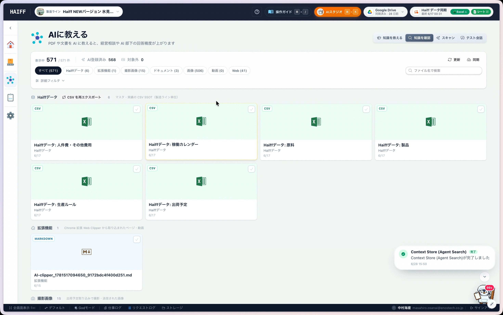
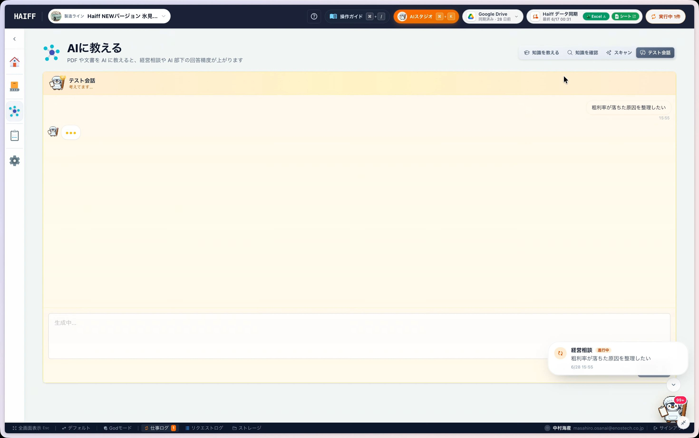

ファイルを投げ込む
PDF、Excel、CSV、画像などをドラッグアンドドロップで追加できます。
まずは「使うかもしれない」資料をAIに入れておくだけで大丈夫です。あとから確認したり、テスト会話で理解度を試したりできます。
PDF、Excel、CSV、画像などをドラッグアンドドロップで追加できます。
URLを入力して、参考ページや社内向けページの内容を取り込めます。
Drive連携済みなら、フォルダ内の資料をまとめてAIに教えられます。
現場で撮った写真や紙資料も、スマホから素材として追加できます。
メモやコード、短い文章をそのまま貼り付けて教えられます。
「AIに教える」画面で、ファイルを投げ込む、Webページを登録する、Google Driveから同期するなど、使いやすい方法を選びます。 はじめは完璧に整理しようとせず、よく使う資料から入れてみるのがおすすめです。
取り込んだ知識はカテゴリーごとに整理されます。「今、AIには何を教えてあるんだっけ？」と思ったら、知識確認画面で一覧や詳細を見直せます。

大事な相談に使う前に、テスト会話でAIの理解度を確認できます。 たとえば「粗利率が落ちた原因を整理したい」と聞くと、登録済みの情報をもとに考えてくれます。

完璧な準備は不要です。PDF、Excel、Webページなど、次の相談で使いそうな資料を入れて、テスト会話で反応を確かめてみてください。